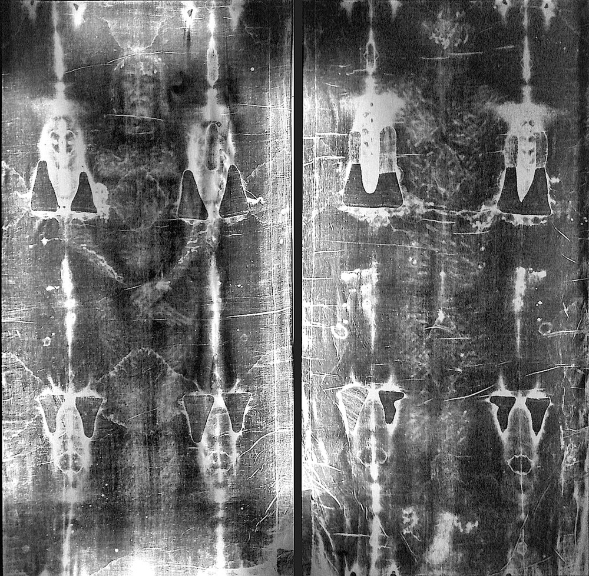
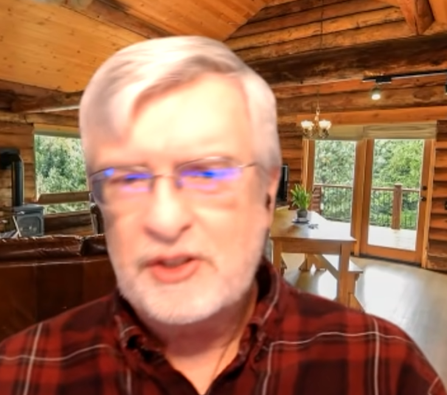

Empirical (verifiable), mathematical & philosophical case for the supernatural — peer-reviewed anomalies, probability bounds, archaeology, NDE research, and the absolute limits of materialism.
This is not an argument from science. It is an argument that science itself only makes sense if God exists. That is a different level entirely — and almost nobody talks about it.
Developed by philosopher Cornelius Van Til and formalized by logician Greg Bahnsen, the Transcendental Argument asks a simple question: what are the preconditions for human reasoning to work at all? (Van Til, A Survey of Christian Epistemology, 1932; Bahnsen, Always Ready, Covenant Media Foundation, 1996).
Ask a materialist: Why does the law of non-contradiction apply in Australia the same way it applies in Norway? It is not made of matter. It is not located anywhere. It does not evolve. Under materialism, it has no grounding. Under theism, it reflects the rational, consistent mind of the Creator. The universe is intelligible because it was made by Intelligence.
"The very tools you use to argue against God — logic, evidence, consistency, the reliability of your own cognitive faculties — all of them presuppose exactly the kind of ordered, rational, morally-governed universe that theism predicts and materialism cannot explain."
This argument does not depend on any specific scientific finding. It cannot be overturned by new data. It operates at the level of epistemology — the study of how knowledge is possible at all. If you want to reject it, you have to explain where logic comes from in a universe of blind particles. Nobody has done that satisfactorily.
No pigments, dyes, or biochemicals. X-ray fluorescence, UV, and IR analysis by the Shroud of Turin Research Project (STURP, 1978–1981) — a team of 33 scientists from NASA, Los Alamos National Laboratory, and major universities — confirm the image is not painted. There is no binder. No pigment penetration. No foreign substance of any kind embedded in the fibers. (Heller & Adler, Canadian Society of Forensic Science Journal, 14:3, 1981).

Then NASA scientists John Jackson and Eric Jumper ran it through a VP-8 Image Analyzer in 1976. This device converts brightness gradients into 3D topographic relief. Every photograph ever made produces a flat, distorted output. The Shroud produced a perfect, undistorted three-dimensional relief of a human body. That cannot happen with a painting. That cannot happen with a photograph. That cannot happen with any contact method. The brightness on the cloth encodes cloth-to-body distance — a property with no natural explanation. (Jackson, Jumper & Ercoline, IEEE 1977 International Conference on Cybernetics and Society, pp. 559–575).
"The Shroud of Turin is either the greatest work of art in human history — or it's authentic. There is no middle ground."
Medieval painting? No pigment found. Acid etching? Leaves chemical residue — none found. Bas-relief rubbing? Produces distorted 3D data — the Shroud produces undistorted. Photography? Requires silver compounds — none found. The image resides in a superficial carbohydrate layer 200 nanometers thick — less than 0.2 microns — on the outermost surface of individual linen fibers, with no binder or pigment penetration below. No imaging technology in existence today can create a controlled image at that resolution and depth uniformly across a 14-foot cloth. (Fanti & Maggiolo, Journal of Optics A, 6:6, 2004). The 1988 radiocarbon dating result of 1260–1390 AD has been challenged by peer-reviewed rebuttal: Rogers (2005) in Thermochimica Acta demonstrated the tested samples were from a 16th-century repair patch with rewoven cotton fibers, chemically distinct from the main body of the cloth.
Over 700 specific cities, people, rulers, events, and geographic details mentioned in the Bible have been independently confirmed by archaeology. Zero have been definitively disproven. (Bryant Wood, Associates for Biblical Research; cross-referenced in May, Oxford Bible Atlas, 1984). These are not interpretations. These are physical objects in museums you can visit today.
In 1979, archaeologist Gabriel Barkay excavated tomb caves at Ketef Hinnom near Jerusalem and found two tiny silver amulets — rolled scrolls smaller than a cigarette. When unrolled under laboratory conditions, they contained the priestly blessing from Numbers 6:24–26 ("The Lord bless thee and keep thee..."). Carbon dating places them at 925–586 BC, making them the oldest known biblical text by approximately 400 years — predating the Dead Sea Scrolls. The text is identical to what is in the Bible today. (Barkay et al., Bulletin of the American Schools of Oriental Research, 334:41–71, 2004).
In 1993, archaeologist Avraham Biran discovered fragments of a basalt victory inscription at Tel Dan, dated to the 9th century BC, written by a Syrian king. The crucial phrase: "bytdwd" — House of David. This is the first extrabiblical reference to King David ever found. Secular scholars had argued David was mythological. The stele destroys that claim entirely. (Biran & Naveh, Israel Exploration Journal, 43:81–98, 1993).
Found in 1880 inside Hezekiah's Tunnel beneath Jerusalem — a 6-line Hebrew text describing workers digging from opposite ends of a 533-meter tunnel hearing each other's pickaxes and meeting in the middle. 2 Kings 20:20 describes Hezekiah making a pool and conduit bringing water into the city. The inscription confirms the event, method, and engineering. The tunnel survives and can be walked today. (Millard, Tyndale Bulletin, 45:113–117, 1994).
For centuries, critics claimed Pontius Pilate was a fictional character. In 1961, a limestone block was found at Caesarea Maritima bearing the inscription: "Pontius Pilatus, Praefectus Iudaeae." Pontius Pilate. Prefect of Judaea. Exact title, exact region, exact time period. (Frova, Rendiconti dell'Istituto Lombardo, 95:419–434, 1961).
For more on how archaeology connects to fulfilled prophecy, see our Prophecy Evidence page.
John D. Barrow (cosmologist, University of Cambridge) & Frank J. Tipler (mathematical physicist, Tulane University) — The Anthropic Cosmological Principle (Oxford University Press, 1986). The universe's physical constants are finely tuned to an incomprehensible degree, allowing chemistry, stars, and life to exist at all.
The odds they calculate for the human genome range from 4−19,800,000 to 4−39,600,000 — roughly 10−11.9 million to 10−23.8 million. That is not a metaphor. A number so vast that even if every grain of sand on Earth were a slot machine spinning every second for the age of the universe, you would not expect the required sequence to emerge even once.
"The fine-tuning and sequential improbability make the origin of life by chance alone an extreme statistical anomaly — straining credulity beyond the available time and mass of the cosmos."
The cosmological constant (Λ) measures the energy density of empty space — what we call dark energy. It controls the expansion rate of the universe. And it is tuned with a precision that physicists find genuinely disturbing.
Quantum field theory predicts a value for Lambda based on known physics. The predicted value is 10120 times larger than what is observed. The observed value is almost exactly zero — but not quite. Nobel laureate Steven Weinberg called this "the worst failure of an order-of-magnitude estimate in the history of science." (Reviews of Modern Physics, 61:1, 1989).
The universe would have expanded so fast after the Big Bang that matter could never clump together. No galaxies. No stars. No planets. No chemistry. No life. A diffuse featureless void.
The universe would have collapsed back on itself within microseconds of the Big Bang. Total gravitational recollapse before any structure could form.
"A common sense interpretation of the facts suggests that a superintellect has monkeyed with physics, as well as with chemistry and biology, and that there are no blind forces worth speaking about in nature. The numbers one calculates from the facts seem to me so overwhelming as to put this conclusion almost beyond question."
Fred Hoyle discovered that carbon-12 — the backbone of all organic life — has a nuclear resonance level at exactly 7.656 MeV. If that resonance were slightly different, the triple-alpha process in stars would not produce carbon in sufficient quantities. Hoyle predicted this resonance level must exist before it was measured, based purely on: "Life exists, therefore it must." When confirmed experimentally (Dunbar et al., Physical Review, 92:649–650, 1953), he concluded the universe looks like "a put-up job." (Annual Review of Astronomy and Astrophysics, 20:1–35, 1982). A committed atheist following his data to a conclusion he found uncomfortable. That is what intellectual honesty looks like.
Peter Stoner, Science Speaks (Moody Press, 1963) — examined 8 major Messianic prophecies with a committee of 600 scientists from the American Scientific Affiliation. Result: 1 in 10¹⁷. Equivalent to covering Texas 2 feet deep in silver dollars, marking one, and having a blindfolded person pick it on the first try.
| Prophecy | Reference | Odds (1 in...) |
|---|---|---|
| Born in Bethlehem | Micah 5:2, ~700 BC | 280,000 |
| Preceded by a messenger | Malachi 3:1, ~430 BC | 1,000 |
| Betrayed by a friend | Psalm 41:9, ~1000 BC | 10 |
| 30 pieces of silver | Zechariah 11:12, ~520 BC | 100,000 |
| Money thrown in temple / potter's field | Zechariah 11:13 | 100,000 |
| Silent before accusers | Isaiah 53:7, ~700 BC | 1,000 |
| Hands and feet pierced | Psalm 22:16, ~1000 BC | 10,000 |
| Crucified among criminals | Isaiah 53:12 | 1,000 |
48 prophecies → 1 in 10¹⁵⁷. The mathematical impossibility threshold is 1 in 10⁵⁰. This is 10107 orders of magnitude beyond that line.
This is the one Darwin himself could not explain. In a geological blink — roughly 5–10 million years out of 3.8 billion years of life on Earth — virtually every major animal body plan appears in the fossil record simultaneously, with no identifiable fossil precursors in earlier strata. The Cambrian Explosion begins approximately 541 million years ago. (Erwin et al., Science, 331:721–725, 2011).
Think about what that means. Before the Cambrian: almost exclusively single-celled organisms and simple multicellular life. Then in a geologically instantaneous moment: eyes, brains, hearts, limbs, shells, nervous systems, digestive tracts, bilateral symmetry, radial symmetry — dozens of fundamentally different body plans, all appearing at once, many with no simpler precursor forms anywhere in the record below them.
"The abrupt manner in which whole groups of species suddenly appear in certain formations has been urged by several palaeontologists... as a fatal objection to the belief in the transmutation of species. If numerous species, belonging to the same genera or families, have really started into life all at once, the fact would be fatal to the theory of descent with slow modification through natural selection."
This was Darwin's own proposed escape: the fossil record is incomplete. We will find the precursors. That was 165 years ago. We have now excavated and catalogued the fossil record on every continent with extraordinary detail. The Precambrian strata are not empty — they contain abundant microbial mats, stromatolites, and Ediacaran organisms. What they do not contain is the ancestral forms that Darwinian gradualism requires. The absence is not a gap in our search. It is a pattern in the data. (Meyer, Darwin's Doubt, HarperOne, 2013).
The Cambrian Explosion is not a mystery at the fringes of evolutionary theory. It is a frontal challenge to the core mechanism. 165 years after Darwin flagged it himself, it remains unsolved. (Gould, Wonderful Life, Norton, 1989 — even the committed Darwinist Stephen Jay Gould acknowledged the Cambrian as deeply problematic).
Here is a fact that changes the entire origin of life debate — and almost nobody frames it this way. DNA is not primarily a chemical phenomenon. It is an information phenomenon. The sequence of base pairs in DNA functions exactly like digital code — and information theory has an iron law about where information comes from.
Francis Crick, co-discoverer of DNA's structure and a lifelong atheist, formulated the Sequence Hypothesis (1958): the specific sequence of nucleotides in DNA carries information that is entirely independent of the chemical properties of the nucleotides themselves. The chemical bonds are just the medium. The sequence is the message. (Crick, On Protein Synthesis, Symposia of the Society for Experimental Biology, 12:138–163, 1958).
"The machine code of the genes is uncannily computer-like. Apart from differences in jargon, the pages of a molecular biology journal might be interchanged with those of a computer engineering journal."
When Bill Gates says "DNA is like a computer program but far, far more advanced than any software ever created" (The Road Ahead, Viking, 1995, p. 228), he is not speaking poetically. He is speaking literally. DNA has: a four-letter alphabet (A, T, C, G), a reading frame, start and stop codons, error-correction mechanisms, redundancy encoding, overlapping reading frames, epigenetic regulation layers, and context-dependent meaning. Software engineers spend careers building systems that approximate a fraction of this complexity.
The question is not "can chemistry produce nucleotides?" Chemists can do that in a lab. The question is: what causes those nucleotides to arrange themselves into a specific, functional, information-bearing sequence? Chemistry explains the letters. It does not explain the message. Nobody — in 70 years of origin of life research — has demonstrated a chemical process that generates specified genetic information without intelligence directing the process. (Tour, Inference, 2016; Meyer, Signature in the Cell, HarperOne, 2009).
Dr. James Tour (Rice University) is one of the ten most-cited chemists in the world according to Thomson Reuters. He builds molecules for a living. He knows what chemistry can and cannot do. And he says this bluntly: nobody in the world knows how life could have started from non-life without a chemist guiding the process. Not because we haven't thought hard enough. Because the chemistry doesn't work without guidance. (Tour, "Animadversions of a Synthetic Chemist," Inference: International Review of Science, 2:2, 2016).
Here is the simplest possible way to understand the problem. Imagine you have a kitchen. It has all the ingredients for a cake — flour, eggs, butter, sugar. Leave them in the room for a billion years. You do not get a cake. You get rot. You get chemical breakdown. You get an unusable mess. The specific combination, in the specific order, at the specific temperature and time is what makes a cake — and that requires a baker.
Life is incomprehensibly more complex than a cake. And the "kitchen" of prebiotic Earth had none of the controlled conditions required. Here is what Tour's research actually shows, step by step:
"No one has ever produced a self-replicating, information-bearing system from basic chemicals without an intelligent chemist in the lab. The coordination problem is overwhelming: multiple components must emerge simultaneously in the right configuration, concentration, and chirality."
Lourdes is not faith healing. It is not placebo. It is not psychology. The Bureau Médical de Lourdes and the International Medical Committee of Lourdes (IMCOSIL) apply a verification process that most clinical trials would envy. To be recognized as officially miraculous, a cure must satisfy all of the following:
As of 2023, 72 cures have been officially declared miraculous by this process. Thousands more have been verified as medically inexplicable but not formally submitted through the full canonical process. The Medical Bureau's files have been reviewed by hundreds of physicians including committed atheists and agnostics.
Delizia Cirolli was a 12-year-old Sicilian girl diagnosed with Ewing's sarcoma of the right knee in 1975 — an aggressive primary bone cancer. X-rays documented the tumor. Her prognosis was terminal. Her family took her to Lourdes in December 1976. On the return journey, the swelling was gone. She could walk normally. Follow-up X-rays showed no tumor, no cancer cells, no evidence of any disease. IMCOSIL examined her over the following years and in 1989 declared her healing scientifically inexplicable. She was alive and healthy decades later. (IMCOSIL Official Dossier No. 62; Theillier, Des guérisons inexpliquées à Lourdes, Éditions de l'Emmanuel, 2013).
"I am not a believer. I came to Lourdes as a skeptic and a physician. What I have seen in these files I cannot explain by any mechanism available to modern medicine. The instantaneous resolution of organic pathology in multiple cases, confirmed by pre- and post-imaging, is not consistent with spontaneous remission in any pattern I recognize."
Alexis Carrel — Nobel Prize in Physiology or Medicine (1912) — visited Lourdes as an agnostic and witnessed a cure firsthand. He spent years trying to explain it away. He ultimately published The Voyage to Lourdes documenting what he saw and concluding it was inexplicable. For the full catalogue of documented healing evidence including modern prayer studies, visit our Healing Evidence page.
The standard dismissal of near-death experiences is that they are hallucinations produced by a dying brain. That dismissal has a fatal problem: the most evidentially significant NDE cases occur when the brain is not producing anything — when EEG is flat, when blood flow has stopped, when by every measurable indicator brain function has ceased entirely. And patients are still reporting accurate, verifiable perceptions of their physical environment.
Pim van Lommel and colleagues conducted a prospective study of 344 consecutive cardiac arrest patients who were successfully resuscitated across ten Dutch hospitals. Of these, 62 patients (18%) reported some form of NDE. The study was published in The Lancet — one of the oldest and most prestigious peer-reviewed medical journals in the world — in 2001 (358:2039–2045). Key findings: patients reported NDEs during periods of verified clinical death with flat EEG. The content of reports — verified out-of-body perceptions, accurate descriptions of resuscitation procedures, identification of staff and equipment — could not be explained by medication, fear, or lack of oxygen.
Dr. Sam Parnia (University of Southampton, later NYU) led the AWARE (AWAreness during REsuscitation) study — the largest prospective study of its kind. 2,060 cardiac arrest patients were tracked across 15 hospitals. Researchers placed targets visible only from above the resuscitation table on high shelves — to test claims of out-of-body perception. One verified case of accurate out-of-body perception was documented during confirmed cardiac arrest with no measurable brain activity. Published in Resuscitation, 85:1799–1805, 2014.
"How can a clear consciousness outside one's body be experienced at the moment that the brain no longer functions during a period of clinical death? Our most important finding was that NDE is an authentic experience which cannot be simply reduced to imagination, fear of death, hallucination, psychosis, the use of drugs, or oxygen deficiency."
David Chalmers (Australian National University) coined the "hard problem of consciousness" in 1995: why and how do physical brain processes give rise to subjective experience — the felt quality of seeing red, hearing music, feeling pain? Materialism describes third-person behavior but fails to explain first-person awareness, abstract thought, and moral agency. This is a fundamental failure of the materialist framework. (Chalmers, The Conscious Mind, Oxford University Press, 1996).
Quantum mechanics presents a problem that goes further than neuroscience. The Copenhagen interpretation holds that a quantum system exists in superposition — all possible states simultaneously — until it is observed. The act of measurement collapses the wave function to a definite state. Mathematician John von Neumann demonstrated in Mathematical Foundations of Quantum Mechanics (1932) that the chain of physical causation regresses infinitely unless terminated by a non-physical observer. Nobel laureate Eugene Wigner extended this explicitly: consciousness must be outside the physical system. (Wigner, Symmetries and Reflections, Indiana University Press, 1967).
"It was not possible to formulate the laws of quantum mechanics in a fully consistent way without reference to consciousness."
The implication: if quantum mechanics requires a non-physical observer to produce definite physical reality, then consciousness is not emergent from matter. It is logically prior to matter. This is not fringe philosophy. It is a mainstream interpretation of quantum mechanics held by von Neumann, Wigner, and championed today by Henry Stapp (Lawrence Berkeley National Laboratory, Mind, Matter and Quantum Mechanics, Springer, 2011).
This is not a theological argument. This is a historical argument. Dr. Gary Habermas (Liberty University, The Historical Jesus: Ancient Evidence for the Life of Christ, College Press, 1996) developed the Minimal Facts Argument: a set of historical facts about Jesus of Nazareth accepted by the overwhelming majority of critical scholars — including atheists, agnostics, and skeptics — based purely on standard historiographical methods, no faith required.
"The resurrection of Jesus is the best-attested miracle claim in history — not because the evidence is perfect, but because the convergence of independent evidence streams and the failure of all naturalistic counter-explanations leaves the historian with only one hypothesis that adequately explains the data."
The hallucination hypothesis requires mass simultaneous hallucination of 500 people — including Paul, a hostile witness with no psychological predisposition to such an experience, who saw Jesus after the initial appearances had ceased. Hallucinations are private, individual neurological events. There is no documented case in clinical literature of group hallucinations of a shared, detailed, physically interactive figure. The hypothesis is not cautious skepticism. It requires a miracle of its own. (Habermas & Licona, The Case for the Resurrection of Jesus, Kregel, 2004).
"The unreasonable effectiveness of mathematics in the natural sciences is something bordering on the mysterious... The miracle of the appropriateness of the language of mathematics for the formulation of the laws of physics is a wonderful gift which we neither understand nor deserve."
Most NDE accounts describe light, peace, and beauty. This one is different. B.W. Melwin's testimony — documented in his book Hell's Deepest Dominion — describes a clinical death experience in which he encountered Christ, was granted a vision of Hell, and returned with a physical detail he could not have fabricated.

During the experience, Melwin reports floating upward from his body toward the ceiling of his room. From that vantage point, he observed specific physical details of the ceiling — marks and features he would not have noticed or remembered from normal floor-level perspective. When he was resuscitated and recovered, he went to examine the ceiling. The marks he had seen while floating — the exact marks — were there. This is the same category of verification as Pam Reynolds' case: a perception reported from an impossible vantage point, independently confirmed by physical evidence.
Hell, in his account, was not a generic pit of fire. It was specific to each soul — crafted in a way that seemed designed for individual persons, as though shaped by intimate knowledge of them. He describes it not as a place of theatrical punishment but as a place of perfect, terrible relevance. This detail — that Hell is not one-size-fits-all but particular — aligns with the theological tradition that judgment is personal and precise.
A first-person account of clinical death, encounter with Christ, and a vision of Hell — including physical evidence verified upon return. If you want to understand what the afterlife testimonies of those who saw the other side actually say, this is an essential read. The physical verification component — the ceiling marks Mewlin saw while floating and then confirmed — puts this in a different evidential category from pure subjective report.
Taken alongside the van Lommel study in The Lancet, the Pam Reynolds case, and the AWARE study, Melwin's account is not an outlier. It is part of a consistent pattern: consciousness persisting and perceiving accurately when the brain is clinically inactive, and returning with verifiable information it could not have obtained through normal sensory channels.
Something the astronomy textbooks don't emphasize: according to standard gravitational collapse models, stars should not be able to form. The problem is called the angular momentum catastrophe.
When a gas cloud begins to collapse under gravity, it rotates. As it contracts, angular momentum is conserved — like a spinning figure skater pulling in their arms. Rotation speeds up dramatically. At a certain point, centrifugal force exceeds gravitational force and the collapse stops. The math predicts that most collapsing gas clouds should never produce stars. (Spitzer, Diffuse Matter in Space, Interscience Publishers, 1968).
Astrophysicists proposed magnetic braking — magnetic field lines threading through a collapsing cloud would transfer angular momentum outward. In practice, observations consistently find that magnetic braking is either too strong (preventing collapse entirely), too weak (not solving the angular momentum problem), or disconnected from the ionized regions where it must operate. (Li et al., The Astrophysical Journal, 738:180, 2011).
"Star formation is slow and inefficient... the fraction of gas that ends up in stars is much smaller than naive estimates would suggest, and we lack a complete theoretical understanding of why."
The universe's star-forming machinery is regulated at a rate that happens to produce a habitable cosmos. Something maintains that regulation. "We don't understand it" is not an argument against design. It is an admission that the natural explanation is missing.
This video covers much of what is documented in this archive — recommended for those who prefer hearing the arguments laid out systematically in full. Share it with someone who would never read a long page like this one.
Stop and actually think about what is on this page.
We have a piece of linen with a man's image on it. No paint. No dye. No pigment of any kind. When you run it through a VP-8 analyzer it spits out 3D data. That cannot happen with a painting. Medieval artists didn't have that technology. We don't fully understand how it got there today. The image exists in a layer 200 nanometers thin with no known mechanism to produce it.
We have over 700 specific Biblical locations confirmed by archaeology. Zero disproven. Silver amulets from 925 BC with the exact text in the Bible today. A 9th-century inscription naming the House of David — discovered by accident. Hezekiah's tunnel still walkable. A Pontius Pilate stone proving the man was real.
We have prophecies written with specific names, specific cities, specific amounts of silver, centuries before fulfillment. Eight of them: 1 in 1017. Forty-eight: 1 in 10157. The impossibility threshold is 1 in 1050. We are 10107 orders of magnitude past that line.
We have the Cambrian Explosion — virtually every animal body plan appearing simultaneously with no fossil precursors, in a window so brief Darwin himself called it a potential fatal objection to his own theory. 165 years of searching have not produced the required precursors.
We have DNA — 3.2 billion base pairs of specified, functional, information-bearing code. Richard Dawkins himself called it "uncannily computer-like." Shannon's information theory has one known source of specified complex information. Intelligence. Not one exception in the history of the field.
We have James Tour — one of the ten most-cited chemists alive — saying nobody knows how life started from non-life without a chemist guiding the process. Douglas Axe measuring 1 in 1077 for a single functional protein fold. A minimum viable cell requires 250–500 simultaneously. The combined odds: 1 in 1038,500. Against an impossibility threshold of 1 in 1050.
We have the cosmological constant tuned to 1 in 10120 precision. Roger Penrose calculating the initial conditions of our universe at 1 in 10^(10^123). Fred Hoyle — a lifelong atheist — looking at the carbon-12 resonance level and writing that the universe looks like a put-up job.
We have cardiac arrest patients reporting accurate, verifiable perceptions of their physical environment while EEG-flat and blood-drained — published in The Lancet and Resuscitation. We have Pam Reynolds describing her bone saw and the surgical team's conversation while brain-dead by every clinical measure. We have B.W. Mewlin floating to his ceiling during clinical death and returning to find the marks he saw — there.
We have consciousness that cannot be produced by brain stimulation, that survives half-brain removal, that persists as a separate identity in conjoined twins sharing the same tissue — and that quantum mechanics says must be non-physical to collapse the wave function in the first place.
And the Transcendental Argument: the very tools used to argue against all of this — logic, mathematical reasoning, the reliability of scientific method — all presuppose an ordered, rational, morally-governed universe. Theism predicts that universe. Materialism merely assumes it without explanation.
So here is the question.
According to the materialist story: the Shroud is a forgery nobody can explain. The prophecies are coincidences the math says are impossible. The Cambrian Explosion will be explained eventually. The DNA code wrote itself. The protein problem will be solved. The fine-tuning is luck across infinite universes we cannot test. Consciousness is "emergent." The NDEs are hallucinations from a brain showing zero activity. And the laws of logic just happen to govern the universe for no particular reason.
Is that really more parsimonious than the alternative?
"Either this is the greatest string of coincidences in the history of the cosmos, or someone was sending a message. There is no third option."
The question isn't whether you have faith. Every worldview requires it. The question is where you're putting it. The archive stands. The data is on the table.
The question isn't can you believe? The question is can you afford not to, given what the evidence actually says?
Peer-reviewed papers, academic books, and institutional sources referenced in this archive. Verify everything. Skepticism is encouraged.